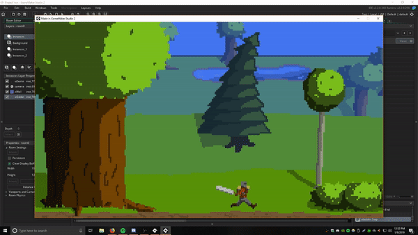
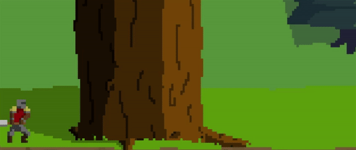

Update #4: Fundamentals of Verticality
3 February 2019

Welp, I lied about working on hitboxes. Instead I did some house cleaning with some of the internals of the code and implemented the foundation for vertical gameplay, namely gravity and jumping. Some of the 'cleaning' was converting segments of code originally written for the Zealot into scripts so that they can be repurposed for other characters and objects. I also added some variable feedback into the game itself (in the top left corner) so I wasn't skimming through a debug window that was flooded every time I ran the game. This will streamline the testing procedure as I implement additional features.
The characters are no longers moving along an invisible axis and instead are resting upon platforms with gravity affecting them anytime they're airborne. The animations leave a lot to be desired but, functionally speaking, they work so I'm inclined to switch onto something else for a while.
Update #3
19 January 2019

A new year and a new update. This time I'm bringing the ability to crouch (block) as well as introducing the first NPC: a goblin. The goblin's AI is straight forward, alternate between patrolling left and right with a pause in between. If the player gets too close, the goblin will chase them attempting to get into range and attack them.

At this point, nearly all of the visual elements have been set up for combat so my next goal is to set up hitboxes and hurtboxes so that characters can fight.
Update #2
15 December 2018

This update came far later than I had hoped. A cold, my work ramping up, and bunch of new game releases ganged up on my free time so Project Iron worked slowed down a bit. That said, here we are! Since last time, I've added a proper sprint (distinct from the default run) as well as an attack animation. Behind the scenes, I've been tinkering with standardizing the dash duration; currently, it varies based on what action the player was taking immediately before the dash.
Update #1
25 November 2018

The first official update for Project Iron! This gif demonstrates most of what I've produced thus far. Namely, a run, idle, dash, and turn animation, a 3 layer background that wherein each layer scrolls at a different pace to create a parallax effect, and the ability move left and right along the screen as well as a camera to compliment this capability. On top of displaying progress on the game, I will occasionally show old files/bugs if I have an unprogressive week or just feel like it. Stayed tuned for more.
Introductions
2018 October 17
This site exists for the purpose of logging progress on a game that is going by the name as well as a place to practice html. There is also a tab for general blogging where I'll toss my incredibly qualified opinion on things such as games, movies, and anime. Lastly, there's a tab where I talk a bit about myself. Look forward to updates.